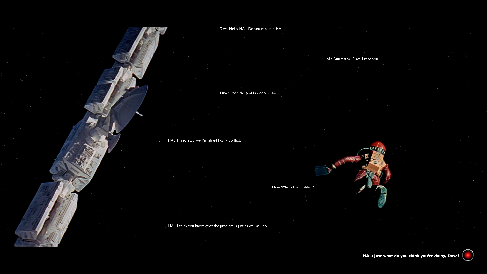

Notes
- Text on landing page will appear slowly, one after the other (to mimic slow pace of the movie)
- The button (Hal) will appear last, and when you hover over it, the text "Hal: Just what do you think you're doing, Dave?" will appear in bold.
- Clicking the button leads to the information page.
Questions
- Should the landing space feel more immersive? Should I make it a scrolling experience and have the viewers be more situated in "space"?
- Is the text box distracting/does it fit the vibe of the movie? I can change the way information is presented.
- Also, is the kind of information presented OK?